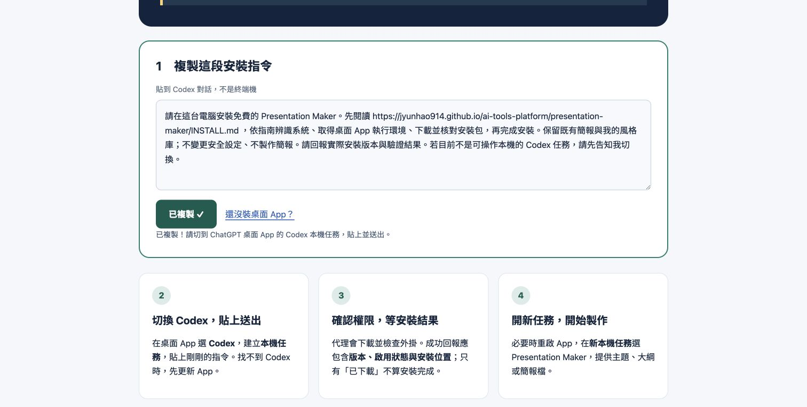
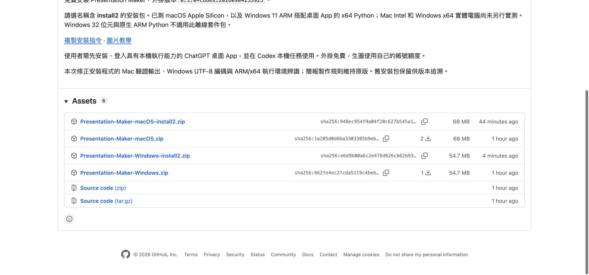
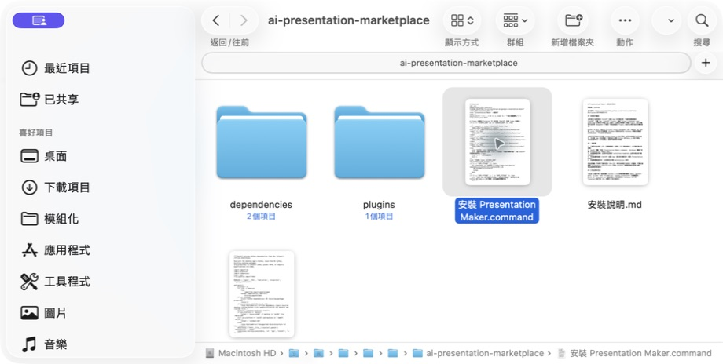
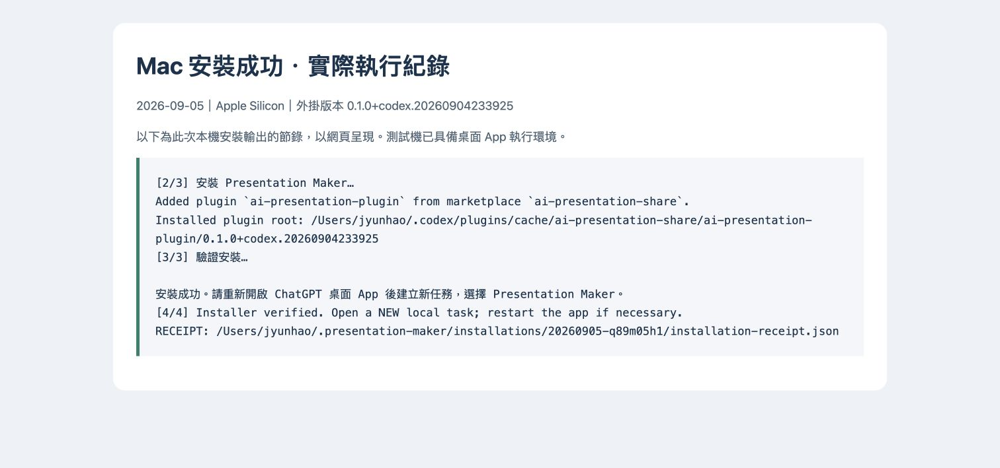
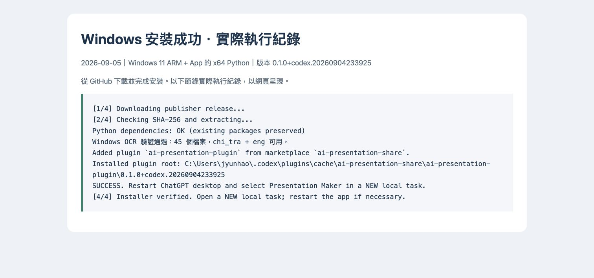

安裝方式擇一即可
跟著畫面，完成安裝。
1. GitHub 指令安裝 2. Mac 手動安裝 3. Windows 手動安裝
桌面 App → Codex → 本機任務不是一般 ChatGPT 聊天、網頁雲端任務或手機。已在 Windows 11 ARM 實測安裝。
1. GitHub 指令安裝

② 貼上送出 → ③ 確認權限 → ④ 開新任務
將指令貼入桌面 Codex 的本機任務。代理會讀指南、下載、核對並安裝；只看到「已下載」不代表完成。成功結果應包含版本、啟用狀態與安裝位置。
必要時重新開啟 App，再於新本機任務選 Presentation Maker。
此段是文字操作說明，非 App 實拍；目前擷取工具不允許拍攝該 App 內部畫面。2. Mac 手動安裝



3. Windows 手動安裝
Windows 11 ARM 已完成安裝測試
使用桌面 App 提供的 x64 Python；內附繁中／英文 OCR 已驗證可執行。下方提供下載頁實拍與實際安裝紀錄，檔案總管操作以文字說明。x64 實體電腦尚未另行實測。
- 下載 Windows ZIP
從上方 GitHub 發布頁選 Presentation-Maker-Windows-install2.zip，不要選 Source code。
- 按右鍵 → 解壓縮全部
開啟解壓後的 ai-presentation-marketplace 資料夾，不要直接在 ZIP 中執行。
- 雙擊「安裝 Presentation Maker.bat」
保留 install_windows.ps1、dependencies 與 plugins。安全提示或組織封鎖時先核對來源，不要停用防毒。
- 確認成功 → 開新本機任務
若顯示失敗，保留錯誤訊息並交給 Codex 排查；不要把下載完成當成安裝完成。

遇到初始化或安全提示？
尚缺執行環境：先在桌面 Codex 本機任務輸入「請初始化本機 Python 與 Node.js 執行環境」，完成後再安裝。系統拒絕執行時，先核對發布者與下載來源；不要全面關閉安全保護。